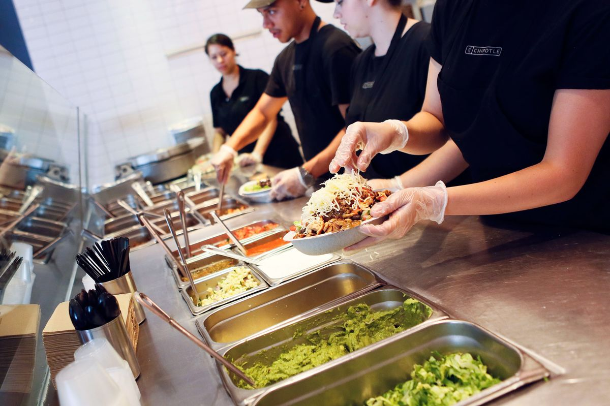

Chipotle Customer Segmentation
Skills: R Programming, Customer Segmentation, K-means Clustering
Objectives: How many customer groups can be classified based on shared characteristics for Chipotle to create a more lucrative marketing strategy?
Approach: Performed unsupervised machine learning K-means clustering to segment Chipotle customers based on demographic, behavioral and psychological factors in order to achieve the optimal marketing mix.
Result: It is recommended that customers should be segmented into 3 groups for optimal profit margin. Marketing strategies are developed tailored toward different groups and a full discussion can be found in detail button.